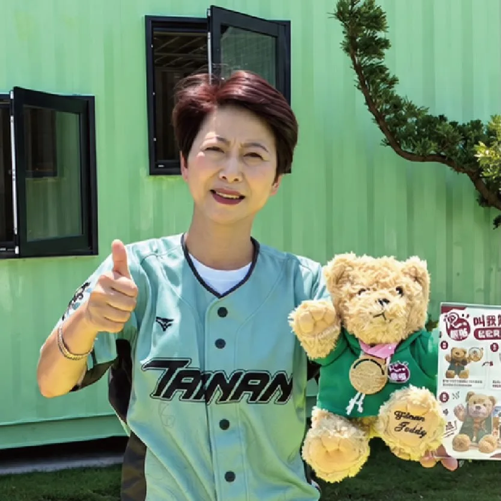
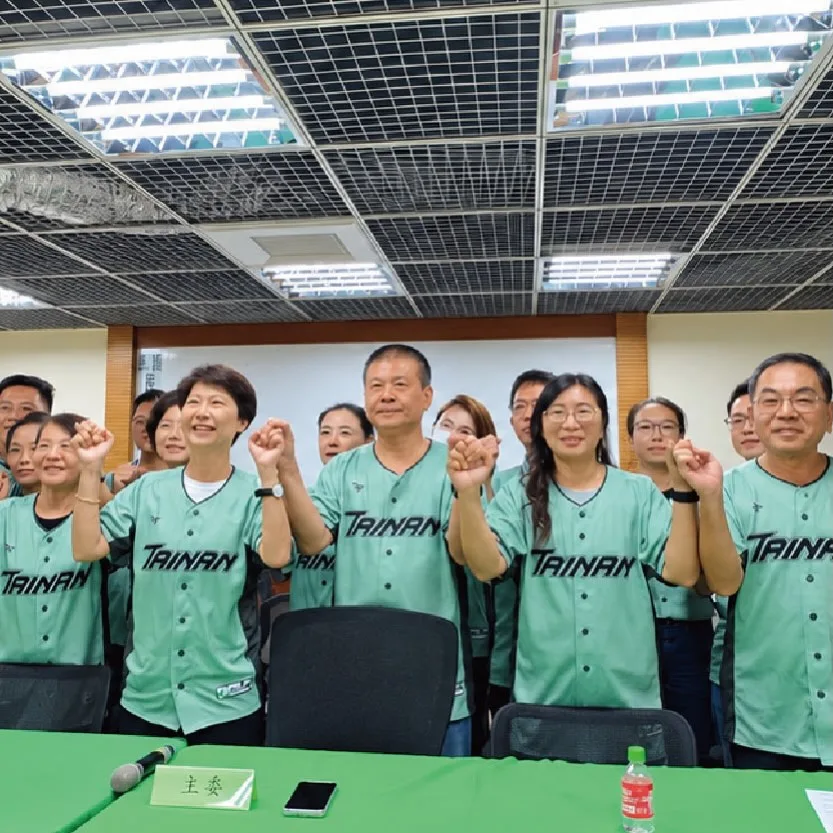

賴瑞隆zenolai

@zenolai:趁著行程空檔來碗肉燥飯，也外帶幾份給助理們。 一碗肉燥飯，有人喜歡滷汁多一點、有人喜歡清爽一點，每個人口味不同；一座城市也是一樣，有不同的想法、不同的選擇。 高雄之所以偉大，就在於城市有多元的聲音，也有包容不同選擇的胸襟。我也會繼續努力，爭取更多市民的認同。 每一位認真打拚、用心經營的在地店家都相當不簡單，我們一起支持高雄好味道，也祝福大家生意興隆！
Posts
@zenolai:趁著行程空檔來碗肉燥飯，也外帶幾份給助理們。 一碗肉燥飯，有人喜歡滷汁多一點、有人喜歡清爽一點，每個人口味不同；一座城市也是一樣，有不同的想法、不同的選擇。 高雄之所以偉大，就在於城市有多元的聲音，也有包容不同選擇的胸襟。我也會繼續努力，爭取更多市民的認同。 每一位認真打拚、用心經營的在地店家都相當不簡單，我們一起支持高雄好味道，也祝福大家生意興隆！

龍介來囉！和你談天說地論台灣｜龍介的直播

Let’s strive together to build a new era for New Taipei!

昨天9/10下午在林碧秀議員、蘇柏興 興台中議員的陪同下，我們來到大里內新黃昏市場掃街拜票，向所有攤販老闆、採買的老朋友懇託！也謝謝送我好彩頭的老闆、投食的店家、以及為我加油打氣喊凍蒜的鄉親！啟臣會加倍努力💪讓 #臺中升級 #幸福加給！ #臺中啟程 #打造旗艦城 #以民為本 #臺中大里


@a_chun1973:競選主委我有「雙主菜」蔡英文榮譽主委和蔡其昌主委； 競選歌曲，我們也推出「雙核心」，由何欣穗來幫忙何欣純創作「咱的台中咱來顧」。 感謝大台中的優秀音樂人聚合，何欣穗、小龜和奇哥一起創作這首歌，也感謝林昶佐Freddy的牽線，促成這次的合作。 台中，是我們的家鄉！ 11/28市長換欣，讓台中創新。 市民對未來好時光的憧憬，免驚！讓我來顧。
🌊 海線媳婦何欣純，推出 #4321海線大進擊！ 我是清水媳婦，也是海線媳婦。每次走訪海線，都能感受到鄉親對交通、建設與地方發展的期待。 今天，我和海線夥伴共同提出「4321海線大進擊」： 🚆 4條軌道加速 藍線拚通車、橘線動工延伸清水、海線鐵路雙軌高架化、舊貨運鐵道轉型觀光鐵道。 🛣️ 3條交通命脈打通 甲埔大道延伸、國道4號延伸台中港、生活圈4號道路闢建。 ✈️🚢 2大海空港升級 升級台中機場、活化台中港與梧棲漁港，帶動海線觀光與產業。 🏆 打造第1的海線 推動台中港盈餘回饋地方，讓海線產業、交通、文化、觀光一起升級！ 4321，海線大進步、大進擊！💪🌊

二十幾年前，我也被問過一次「什麼時候蓋得好」。 那顆小巨蛋，今天還在用。 後來，我又被問一次「什麼時候可以啟用」。 那顆大巨蛋，今天大家都在看球。 新北這一顆，我要讓大家早一點進場，用久一點。

@pumashen:敲碗成功啦！ ⠀⠀ 〖應援台北〗方案緊急加製， ⠀ 在堅持台灣製造的前提下，追加1,332組， 奔奔、抱抱各666隻，隨機出貨。 ⠀ ❑ 捐款方案 𝙉𝙏 $3,939〖應援台北〗 明天中午12點準時開放！ ⠀ 感謝廠商情義相挺，因台灣製作量能有限，本批訂購預計10月底陸續出貨。 謝謝大家支持！
明早逛市場，歡迎大家來買菜逛街， 也來跟我聊聊、打聲招呼！ 9/11（五） 08:30 📍臨江市場
你們越挺我，我就越拚命！ 我們一起串起山城，連結臺中💪 在東勢看到上千位山城鄉親齊聚，心裡真的只有滿滿的感恩。從政一路走來，山城每一個建設、每一次突破，都是因為有大家當我的最強後盾。 這幾年，我們一起催生 #國道四號豐潭段 、拚 #東豐快復工，目的就是要打通交通命脈。未來我們還要結合 #客家與原民文化、溫泉觀光及在地農特產，讓遊客造訪山城、促進地方繁榮，拚建設一條心、做到底！ 感謝古秀英議員服務團隊議員、吳振嘉 振興山城 有嘉在長期攜手深耕，以及在地農會與各界前輩的全力相挺。山城的大團結，就是臺中迎向黃金十年的最大動力。 懇託各位山城鄉親，年底選戰我們全力衝刺，讓市長高票當選、議員全壘打、基層服務不間斷，我們一起為家鄉拚出更好的未來！ #臺中啟程 #打造旗艦城 #山城 #農家子弟


把高雄放在心上、把責任扛在肩上，我會全力以赴為高雄努力！


@chen_tingfei:繼農業熊、漁業熊之後，今天「第一名妃妃泰迪熊」正式登場！ 妃妃泰迪熊穿著專屬帽T，掛著象徵第一名的獎牌，還可以把自己最喜歡的照片放進相框裡❤️ 不過先偷偷說，妃妃泰迪熊總共有9款。 下一隻會是什麼主題的妃熊呢？大家拭目以待🤩


@su.chiaohui:一起拚，拚出新北新時代！ 感謝 @william_chingte 總統、@tsai_ingwen 小英總統、@chenchimai 市長，以及到現場支持我們的2萬名市民！ 未來的新北，除了基礎建設要做得又快又好，更要運用新科技、新技術和新觀念來一起推動市政，讓企業願意投資新北、人才願意留在新北，打造專屬新北市的「城市品牌」，讓在地人、外地人都喜愛這座城市。
@pumashen:剛到家 想說寫一下石牌的心得 但因為被人潮震驚到了 一時間不知道該寫什麼 總之 真的很謝謝大家 中間還下雨 真的對大家很不好意思 希望大家都有吃飯、有吃飽～ 收到很多建言與鼓勵 我一定會好好努力的 我愛大家
競選主委我有「雙主菜」蔡英文榮譽主委和蔡其昌主委；競選歌曲，我們也推出「雙核心」由何欣穗來幫忙何欣純創作「咱的台中咱來顧」。 台中，是我們的家鄉！ 11/28市長換欣，讓台中創新。 市民對未來好時光的憧憬，免驚！讓我來顧。

#SanminDistrictTempleTalk #SanfongTemple Four years ago, my first temple-front rally started at S...

🐻「叫我第一名妃妃泰迪熊」萌翻亮相！ 選戰倒數，台南隊也要可可愛愛、全力以赴！ 毛茸茸的妃妃泰迪熊，穿上專屬帽T、掛著第一名獎牌，還有專屬相框，把最喜歡的照片放進去，讓「第一名」陪你一起妃熊幸福❤️ 而且這還不是全部！ 妃妃泰迪熊未來總共將陸續推出9款不同造型，每一款都有不同任務、不同故事，陪台南走向下一個400年。 2026，台南400年第一位女市長＋議員全壘打！ 台南隊，準備上場！⚾
敲碗成功啦！ ⠀⠀ 〖應援台北〗方案緊急加製， ⠀ 在堅持台灣製造的前提下，追加1,332組， 奔奔、抱抱各666隻，隨機出貨。 ⠀ ❑ 捐款方案 𝙉𝙏 $3,939〖應援台北〗 明天中午12點準時開放！ ⠀ 感謝廠商情義相挺，因台灣製作量能有限， 本批訂購預計10月底陸續出貨。 謝謝大家支持！
@hsiehlungchieh:＃十大新政全面升級 ＃育兒三箭育兒無憂 🏹幼兒日常免費： 「0到3歲嬰幼兒尿布免費」是龍介4年前就提出的重要政見。養囝仔，除了奶粉，尿布也是每天少不了的固定開銷。 台南本身就有優質尿布廠商，未來由市府大量採購、降低成本，直接讓嬰幼兒免費使用，實實在在替新手爸媽省下一筆育兒開銷、減輕養育負擔。 🏹醫療健保免費： 孩子健康，是每個父母最掛心的代誌。龍介提出「0到6歲幼兒健保全額免費」，健保費由市政府補助，替家庭多扛一點，讓台南孩子從出生到上小學前，不用再由家長負擔健保費，也讓每一個囝仔都能安心、健康長大。 🏹公托機構翻倍： 目前台南僅有19處公共托育機構，包括6家公設民營托嬰中心、13家公共托育家園。龍介上任後，要讓公托數量直接翻倍，擴大托育量能，讓爸媽不再為了搶名額傷腦筋。 同時活化閒置校舍，轉型公托空間，就近提供托育服務，方便家長接送，讓孩子有更安全、安心的成長環境。 少子化，不是喊幾句「鼓勵大家多生」就能解決。年輕人不是不喜歡孩子，而是從孩子一出生開始，奶粉、尿布、健保、托育，每一項都是錢，都是爸媽每天要面對的現實壓力。
@zenolai:隆來看歌仔戲！ 這次瑞隆學做戲，跤步手路猶無夠水氣，請大家多多包涵，來給瑞隆拍噗仔👏

"South Kaohsiung Support Association" Officially Established: Transforming South Kaohsiung, Creat...


Thank you to my accountant friends for forming a support committee and giving me your steadfast b...

一起拚，拚出新北新時代！ 感謝 @william_chingte 總統、 @tsai_ingwen 小英總統、 @chenchimai 市長，以及到現場支持我們的2萬名市民！ 未來的新北，除了基礎建設要做得又快又好，更要運用新科技、新技術和新觀念來一起推動市政，讓企業願意投資新北、人才願意留在新北，打造專屬新北市的「城市品牌」，讓在地人、外地人都喜愛這座城市。

何欣純競選主題曲《咱的台中 咱來顧》MV首播！
@schuanglawyer:這是一個情境題。 如果你是一位市長，遇到愈來愈多年輕人、外地遊客慕名而來，甚至吸引國際旅客專程前往的熱門景點，你會怎麼做？ 一般人當市長，會用心經營、大力推廣。 絕對不是放任合約到期、消極擺爛。 很遺憾地，從明天起，桃園神社的原經營團隊合約期滿撤離，神社將正式面臨營運空窗期。而且這不是突發狀況，桃園市政府早就知道委外契約即將到期。 我要問張善政，為什麼沒有提前招商、做好交接？任由好不容易打造的城市亮點，苦心累積的成果瞬間歸零。張善政的消極與擺爛，再次暴露了他對地方觀光和文化資產的漫不在乎！ 更何況桃園神社早就不只是普通的觀光景點，而是珍貴的文化資產。 面對桃園神社的未來，我上任後，會積極尋找好的團隊，延續過去成功的經驗，讓在地文化一點一滴累積成城市品牌，和市民一起重新擦亮桃園的名字！
@hammer__lee:二十幾年前，我也被問過一次「什麼時候蓋得好」。 那顆小巨蛋，今天還在用。 後來，我又被問一次「什麼時候可以啟用」。 那顆大巨蛋，今天大家都在看球。 新北這一顆，我要讓大家早一點進場，用久一點。
#臺中升級 #幸福加給 北大安/大甲日南聯合問政說明會 明天晚上我與台中市議員 李文傑、楊啓邦 甲安埔ㄟ鄉親議員連續兩場問政說明會，議員們會向鄉親報告服務成績單，啟臣也要把對臺中的目標、願景向各位市民朋友詳細解說。 歡迎所有大安、大甲的好朋友攏總作伙來，將各位的心聲表達讓我們知道，未來交給啟臣和在地議員一起努力為各位打造幸福家園！ 📍活動資訊 時間｜9/11（五）18:30 地點｜大安區松雅保安宮 （大安區松一街3號） 📍活動資訊 時間｜9/11（五）19:00 地點｜大甲區日南慈德宮 （大甲區通天路152號） 共同出席｜市議員李文傑、楊啓邦 #臺中啟程 #打造旗艦城 #臺中大安 #臺中大甲 #幸福旗艦城 #臺中味 #TaichungWay
@hsiehlungchieh:神力女超人來相挺、女力應援翻轉大台南 09月12日(六)，南投縣長許淑華來到台南與龍介一起翻轉大台南、人民贏一次！

大家敲碗的「台南隊」球衣，正式上線！ 從台南400年，到科技新城、農漁大城，台南一路走來，始終團結、堅持、向前。 這一次，把對台南的認同穿在身上。一起穿上DPP台灣狼《台南》聯名款城市球衣，為台南隊加油，也為台灣一起拚！
小英來開箱⛺️ 何欣純「露營風競總」有多特別？一起來看看！ @ingwen831